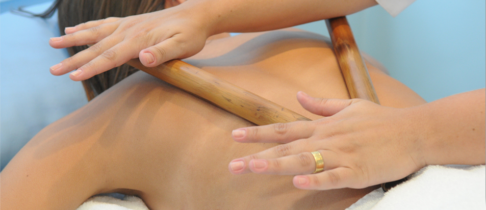

O Método Pilates
A técnica une princípios orientais e ocidentais aos exercícios. Os aspectos orientais podem ser percebidos através do controle da respiração,o desenvolvimento da flexibilidade e uma maior concentração que permite ter maior consciência ao se exercitar. Já os princípios ocidentais estão voltados ao condicionamento físico e ao desenvolvimento da força, com uma preocupação específica com os aspectos estéticos de força muscular, condicionamento físico e correção postural.
NeoPilates
Shiatsu
Boxe
O método foi desenvolvido pela fisioterapeuta catarinense, Amanda Braz, em 2010 e está sendo reconhecido em todo o país.
O Shiatsu foi desenvolvido com base na técnica do Anma que utiliza pressão, fricção, alongamento, compressão, massagem ...
Em breve, fique ligado.